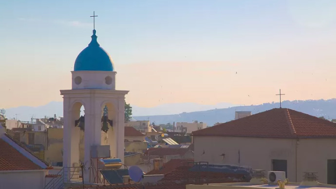

하니아 섬
 그리스 크레타섬에서 두번째로 큰도시이며, 하니아 또는 차니아라고 부른다. 하니아 현의 현청 소재지이며 도시는 섬 북쪽 해안과 접하고 있다. Chania 하니아(차니아)시는 구도시와 큰도시인 현대도시 이렇게 두부분으로 나눌 수 있다. 구도시는 구항구 옆에 자리 잡고 있다. 베네치아의 지배를 받을 당시 베네치아에서 요새로 사용하기 위해 항구를 둘러싼 성벽을 지었으며 동부와 서부 지역에 흔적이 남아 있다. 남쪽의 구도시는 점진적으로 현대도서와 이어지며 북쪽에서의 물리적 경계는 바다이다. 현대도시의 중심은 구도시 옆이며 남쪽으로 이어지는 지역이다.
하니아의 역사
- 그리스 미노아 정착촌이었다.
- 석기시대 이후로 거주한 것으로 보인다.
- 호머의 오디세이에 나오는 중요한 지역이다.
- 아랍과 베네치아의 지배를 받았다.
본토 그리스에서 온 정착민들의 첫번째 주요 이동. 기원전 1100년 경에 온 도리안 그리스인에 의한 것이었다. Kydonia는 Aptera, Phalasarna 및 Polyrrinia와 같은 Creta 도시국가와 끊임없이 전쟁 중이었다. 69BC, 로마 영사 Caecilius Metellus는 Cretans를 격파하고 그가 속한 독립적인 도시국가의 특권을 수여한 Kydonia를 정복했다.
하니아 날씨

하니아는 맑고 건조한 여름과 매우 온난한 비가 오는 겨울이 있는 아열대 지중해 기후이다. 4월과 10월 사이의 맑은 하늘 날씨는 거의 매일의 특징이다. 대기는 항상 따뜻하며 38도 이상의 무더위는 흔하지 않다. 바람이 많이 부는 겨울과 비가 오는 겨울에도 화창한 날이 빈번하다. 눈과 서리는 해안 근처에서는 드물다.
하니아 맛집
 로컬식당 하나를 꼽자면 Koutourouki이다. 하니아 메인거리 시작하는 부분에 위치해 있다. 베네치아 항구에서 도보 5분거리이다. 구체적인 느낌은 가득식당이랄까.. 자연과 함께하는 식당 분위기이다. 하우스와인 500ml가 4유로이며 와인잔이 아닌 일반 컵을 준다. 스모크 포크 스테이크는 10유로인데 질기거나 퍽퍽하지 않고 맛있다. 머쉬룸 리조또는 8.5유로이며 향이 이국스럽다.
로컬식당 하나를 꼽자면 Koutourouki이다. 하니아 메인거리 시작하는 부분에 위치해 있다. 베네치아 항구에서 도보 5분거리이다. 구체적인 느낌은 가득식당이랄까.. 자연과 함께하는 식당 분위기이다. 하우스와인 500ml가 4유로이며 와인잔이 아닌 일반 컵을 준다. 스모크 포크 스테이크는 10유로인데 질기거나 퍽퍽하지 않고 맛있다. 머쉬룸 리조또는 8.5유로이며 향이 이국스럽다.